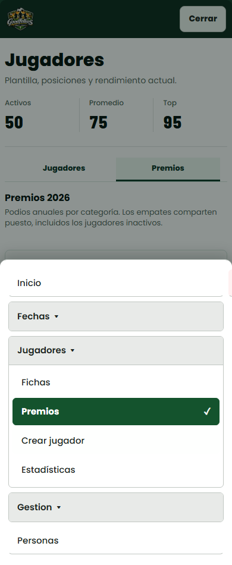
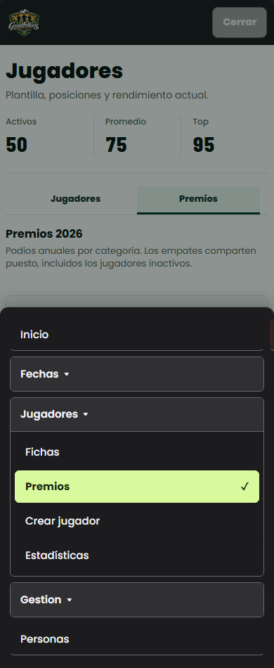
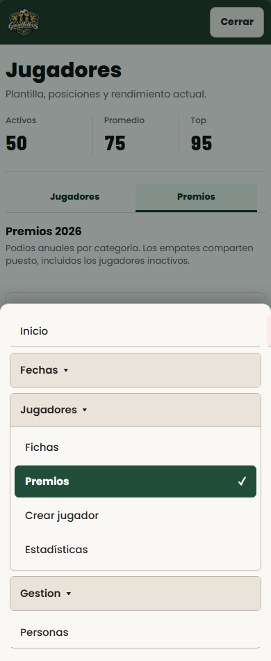

1. Blanco y verde
La mas clara: lectura directa y buen contraste.

2. Grafito y lima
Recomendada: deportiva y con el destino activo muy visible.

3. Marfil y bosque
Mas calida, con menos brillo que el blanco puro.
